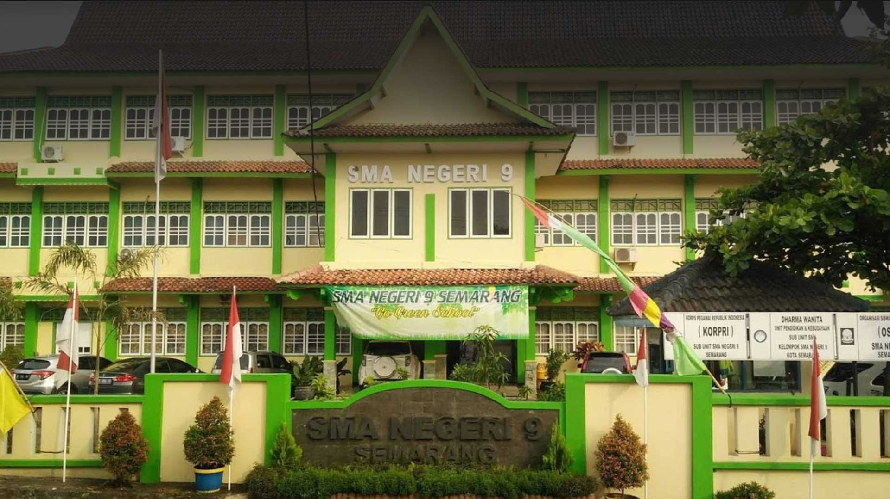

Digital Talent Scouting - Kominfo
Halo Semuanya !!!
Saya Ilham Putra Arifa biasa dipanggil ilham. Saya merupakan lulusan dengan beberapa pengalaman organisasi dan pelatihan di bidang terkait. Percaya diri untuk menghadapi setiap masalah dengan kemampuan analitis dan pemecahan masalah yang baik. Bekerja dengan baik secara mandiri atau dalam kelompok. Dikenal sebagai orang yang memiliki jiwa kepemimpinan yang baik, komitmen tinggi, berorientasi pada tujuan, dan easy going.
Latar Belakang Pendidikan

Universitas Diponegoro
2016-2020
FT - Teknik Komputer
SMA N 9 Semarang
2012-2015
IPA

Pengalaman Project
Aplikasi Mobile "PLN Sehat"
Aplikasi Mobile yang digunakan untuk mencari layanan kesehatan terdekat yang bekerja sama dengan PLN.
Sentimen Komentar Analisis
Implementasi Algoritma SVM untuk Klasifikasi Sentimen Analisis pada Aplikasi E-ticketing PlayStore